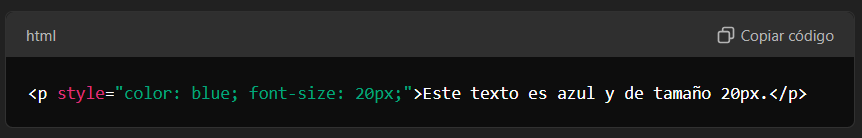
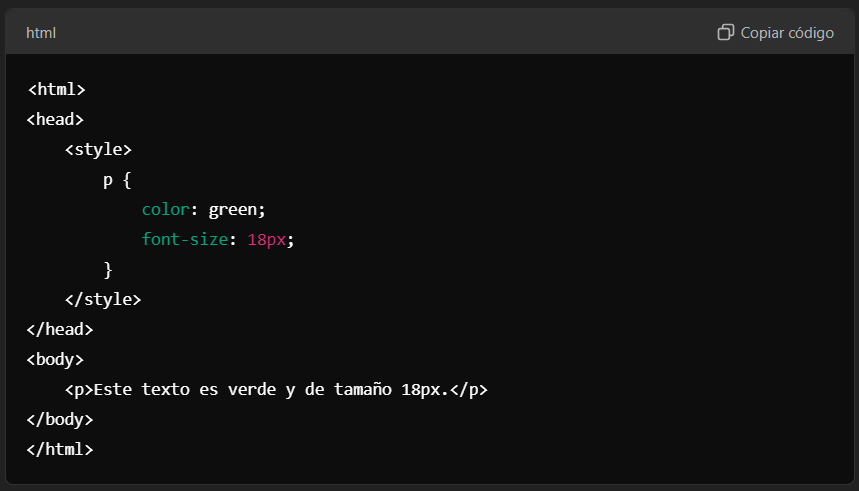
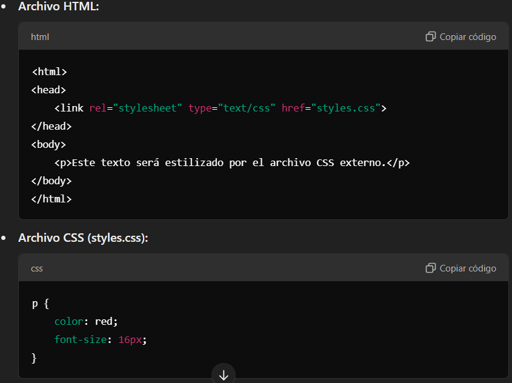

¿Qué es?
CSS es un lenguaje utilizado hacer que la estructura HTML sea más bonita. Su función principal es definir cómo los elementos HTML deben ser visualizados en la página web.
¿Para qué sirve?
CSS básicamente sirve para hacer las interfaces del cliente web mucho más atractivas visualmente, también permite la adaptabilidad del diseño para dispositivos con diferente tamaño de pantalla.
CSS en línea (inline)
Consiste en aplicar estilos directamente a un elemento HTML a través del atributo "style"

CSS en el encabezado (internal)
Los estilos se colocan en una etiqueta "style" dentro de la sección "head" de un documento HTML

CSS externo
Implica crear un archivo separado con extensión .css que contiene las reglas de estilo. Luego, se enlaza este archivo a través de la etiqueta "link" en la cabecera del documento HTML.

MDN Web Docs (Mozilla Developer Network)
MDN es una referencia confiable y exhaustiva sobre lenguajes web como CSS, con documentación clara, ejemplos interactivos y tutoriales para aprender desde los conceptos básicos hasta temas avanzados. Es un excelente recurso para aprender CSS de manera detallada y precisa.
CSS-Tricks
CSS-Tricks es un sitio popular que ofrece una mezcla de artículos, guías y tutoriales sobre CSS y temas relacionados con el desarrollo web. Su contenido es muy práctico, cubriendo tanto fundamentos como técnicas avanzadas de diseño con CSS, lo que lo convierte en una fuente útil tanto para principiantes como para desarrolladores con experiencia.
freeCodeCamp
freeCodeCamp es una plataforma gratuita que ofrece ejercicios interactivos para aprender a programar. Su curso de "Responsive Web Design" incluye secciones dedicadas a aprender CSS desde cero, con ejercicios prácticos que permiten a los usuarios aprender de manera activa mientras desarrollan proyectos.